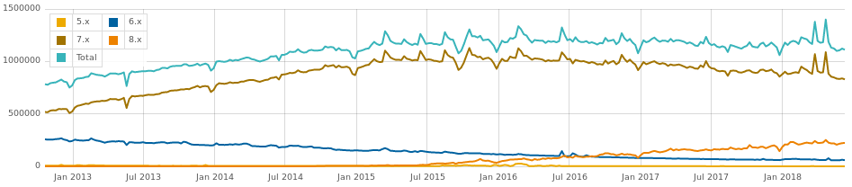

Drupal 8
Etat des lieux 2 ans et demi après sa sortie
Romain Moro
Développeur PHP/Drupal
 @c4ilus
@c4ilus
 https://www.drupal.org/u/c4ilus
https://www.drupal.org/u/c4ilus

Petit retour en arrière
Back in 2013
Not invented Here !
Let's develop it ourselves
We can invent it ourselves
Open innovation is hype
That's too simple
Les promesses
Proudly Found Elsewhere !
Les développeurs
Symfony, Guzzle, Twig, Composer ...
Test unitaires
La communauté
Entity référence, Views,
Ergonomie revisitée
Import / Export de configurations
Globalement
Des projets plus ambitieux
Des meilleures performances
La sortie
19 Novembre 2015
Et le temps passe ...
... et passe ...
... et passe ...
Aujourd'hui
Nous y sommes !
- Gestion des contenus (très complète)
- Multilinguisme (trés fonctionnel)
- Stabilité des APIs (Formulaires, Entités)
- Templating, Performance
On avance ...
- L'ergonomie en général
- Workflow / Content modération
- Migration / CMI
- Intégration de moteurs de recherches
- Gestion par composer par encore optimale
Et puis ...
☹☹☹
- Le media "Hold my beer" center => 8.6
- Migration / CMI => 8.6
- API First => 8.6 / 8.7 ?
- Régressions entre chaque version de Drush
- Toujours pas de fusion dentre Drush et Drupal Console
Pochaines dates
- Semaine du 18 Juillet 2018 : feature freeze de la 8.6.0
- 5 Septembre 2018 : sortie de la 8.6.0 stable
Chiffres, le 10 Juin 2018
- Total de sites sous Drupal (toutes versions) : 1,111,477
- Drupal 7 : 829,079
- Drupal 8 : 223,120
Drupal 9
Source : https://www.flocondetoile.fr/blog/faut-il-attendre-drupal-9-pour-mon-projet-webRessources
- Getting off the island in 2013 : https://www.garfieldtech.com/blog/off-the-island-2013
- Proudly Found Elsewhere : https://frama.link/Lp_T5RCA
- Strategic Initiatives : https://www.drupal.org/about/strategic-initiatives
- Usage statistics for Drupal core : https://www.drupal.org/project/usage/drupal
- Drupal development roadmap : https://www.drupal.org/core/roadmap